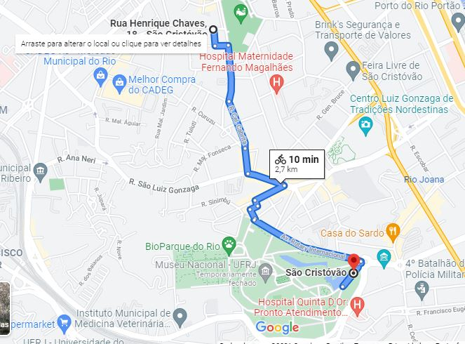

“Dia de muitas entregas na loja de animais 'Petshop Rações', são 11 h da manhã e o WhatsApp da loja recebe o pedido de 300 kg de comida para hipopótamo do zoológico da Quinta da Boa Vista, que fica a 2,2 km de distância da loja na rua Ferreira de Araújo no bairro do Caju . O diretor do zoológico diz que o pedido é urgente porque o estagiário acabara de jogar a comida dos hipopótamos toda para os infernais pombos que rodeiam o zoológico.” Agora é com você, decida quem vai conseguir levar o pedido para o zoologico!
Essa é a melhor equipe de entregadores que você vai conhecer e eu posso provar, os três possuem habilidades especiais,
e cabe a você escolher um deles pra fazer uma grande entrega, até porque você é o chefe.
Obs: Com base nas caracteristicás de cada um faça a melhor escolha. Apenas um conseguirar completar essa entrega
Guilherme:
“Um cara sério e de poucas palavras, é o rapidinho da equipe capaz de atingir 60 km/h com sua bike vermelha e fazer as entregas mas longas parecer uma ida ao banheiro, porém ele não consegue carregar muito peso então ele leva um item por vez pesando até 50kg”.
Gustavo:
“O Gustavo é justamente o inverso do Guilherme além de ser o brincalhão e carismático da equipe ele não tem o seu forte na velocidade e sim na sua força, o cara consegue carregar até 100kg na sua bike azul, porém quanto mais peso ele carrega, mais lento ele fica”
Victoria:
“A durona de coração manteiga é o celebro da equipe. Vocês acreditam que ela é capaz de memorizar todas as ruas da cidade? isso a deixa um passo a frente dos outros, podendo cortar caminho e chegar bem rápido ao destino, além de também conseguir carregar bastante peso na sua bike laranja. Seria a entregadora perfeita se não fosse por uma coisa, ela cansa rápido!”